A two-dimensional elliptic solver built from axial Green operators and a learned directional source split
Junhong Jo
National Institute for Mathematical Sciences
Joint work with Taeyoung Ha (NIMS) and Chang-Ock Lee (KAIST)
Tuesday, July 21, 2026
Reduce
a multi-dimensional elliptic problem into axial Green subproblems
Couple
learn the directional source split that makes axial reconstructions consistent
Recover
a multi-dimensional solution from coupled axial Green operators
\begin{aligned} -\nabla\cdot(a\nabla u)+\mathbf b\cdot\nabla u+cu &= f &&\text{in }\Omega,\\ u &= 0 &&\text{on }\partial\Omega, \end{aligned} \qquad \mathbf b=(b_x,b_y).
\mathcal S_{a,\mathbf b,c}: f\mapsto u, \qquad u=\mathcal S_{a,\mathbf b,c}[f].
Operator fixed; source varies.
Direct map
one global source-to-solution representation
High-dimensional and geometry-sensitive
→
Reduced view
directional 1-D operators + learned coupling
Structure-preserving MOR framing
L_xu=-\partial_x(a\partial_xu)+b_x\partial_xu+\frac12cu, \qquad L_yu=-\partial_y(a\partial_yu)+b_y\partial_yu+\frac12cu.
L_xu+L_yu=f.
2D forcing problem
→
Axial interval view
→
GreenNet: line-wise inverse
Kernel integration
v(t)=\int_0^1 G_\theta(t,\eta)\rho(\eta)\,d\eta
line source profile -> line solution
→
CouplingNet: directional coupling
Directional coupling
f \xrightarrow{\mathrm{CouplingNet}}(\phi,\psi), \qquad \phi+\psi=f
\phi\xrightarrow{G_x}u_\phi, \qquad \psi\xrightarrow{G_y}u_\psi \Rightarrow u
Axial GreenNet provides line-wise inverses; CouplingNet learns the directional source split that couples them into a 2D solution.
Physical one-dimensional axial operator
\begin{aligned} &s\in[s_0,s_1],\\ &\mathcal L_{\mathrm{phys}}u = -\frac{d}{ds} \left(a_{\mathrm{phys}}(s)\frac{du}{ds}\right) + b_{\parallel,\mathrm{phys}}(s)\frac{du}{ds} + c_{\mathrm{phys}}(s)u = f_{\mathrm{phys}}(s). \end{aligned}
Normalize the coordinate
s0 L=s1-s0 s1
0 1
s=s_0+Lt,\qquad v(t)=u(s_0+Lt),\qquad t\in[0,1].
The interval is normalized, but the physical length is not discarded.
a_{\mathrm{unit}}=a_{\mathrm{phys}}, \quad a'_{\mathrm{unit}}=L a'_{\mathrm{phys}}, \quad b_{\parallel,\mathrm{unit}}=L b_{\parallel,\mathrm{phys}}, \quad c_{\mathrm{unit}}=L^2c_{\mathrm{phys}}, \quad f_{\mathrm{unit}}=L^2f_{\mathrm{phys}}.
-\frac{d}{dt} \left( a_{\mathrm{unit}}(t)\frac{dv}{dt} \right) + b_{\parallel,\mathrm{unit}}(t)\frac{dv}{dt} + c_{\mathrm{unit}}(t)v(t) = f_{\mathrm{unit}}(t), \qquad t\in[0,1].
Here b_\parallel=b_x on an x-directed interval and b_\parallel=b_y on a y-directed interval.
Source profile
f_{\mathrm{unit}}(\eta)
G_{\mathrm{unit}}(t,\eta)
kernel integral operator
Solution profile
v(t)
\mathcal G_{\mathrm{unit}}[f_{\mathrm{unit}}](t) = \int_0^1 G_{\mathrm{unit}}(t,\eta) f_{\mathrm{unit}}(\eta) \,d\eta, \qquad v=\mathcal G_{\mathrm{unit}}[f_{\mathrm{unit}}].
Operator coefficients: Axial coefficient profiles define each local 1D operator.
Kernel coordinates (t,\eta) define the evaluation and source points.
GreenNet target is a local unit-interval kernel, not a global 2D Green function.
Hybrid Green kernel
G_\theta = \text{Dirac delta structure} + \text{Heaviside cancellation} + \text{learned smooth correction}.
Dirac delta structure
Provide the source singularity.
Heaviside cancellation
Cancel the Heaviside contribution generated by the Dirac-delta jump.
Learned smooth correction
Learn the remaining smooth residual.
Built-in singular and cancellation structure reduces what the neural network must learn.
G_\theta(t,\eta) = \underbrace{\color{#9aa9aa}{E(t,\eta)M(t)R_\theta(t,\eta)}}_{\text{learned smooth correction}} + \underbrace{\color{#c9851e}{B(t)\left(J_0(t,\eta)-\frac12E(t,\eta)\right)}}_{\text{Heaviside cancellation}} + \underbrace{\color{#0a7c86}{A(t)G_0(t,\eta)}}_{\text{Dirac delta jump}}.
Dirac delta structure
G_0(t,\eta)= \begin{cases} t(1-\eta), & t<\eta,\\ \eta(1-t), & t\ge\eta, \end{cases} \qquad \partial_t^2G_0=-\delta(t-\eta).
Heaviside cancellation
\partial_tJ_0(t,\eta)=G_0(t,\eta), \quad S=J_0-\frac12E, \quad \partial_t^2S=\partial_tG_0.
Coefficient factors
A(t)=\frac{1}{a_{\mathrm{unit}}(t)}, \qquad B(t)= \frac{a'_{\mathrm{unit}}(t)+b_{\parallel,\mathrm{unit}}(t)} {a_{\mathrm{unit}}(t)^2}.
The analytic terms handle the Green-function singularity before learning.
G_\theta(t,\eta) = \underbrace{\color{#d85c46}{E(t,\eta)M(t)R_\theta(t,\eta)}}_{\text{learned smooth correction}} + \underbrace{\color{#9aa9aa}{B(t)\left(J_0(t,\eta)-\frac12E(t,\eta)\right)}}_{\text{Heaviside cancellation}} + \underbrace{\color{#9aa9aa}{A(t)G_0(t,\eta)}}_{\text{Dirac delta jump}}.
Learned smooth correction
E(t,\eta)M(t)R_\theta(t,\eta), \qquad E(t,\eta)=t\eta(1-\eta), \qquad M(t)=1-t.
GreenNet learns R_\theta, while E(t,\eta)M(t) makes the correction boundary-compatible. The singular and cancellation structure is built into the kernel form.
The neural network learns only the smooth residual, with boundary-compatible envelope factors.
No pointwise Green-kernel labels.
w(t)\sim\mathcal{GP}(0,k_\ell)
→
v(t)=w(t)-((1-t)w(0)+t\,w(1))
so v(0)=v(1)=0
→
f_{\mathrm{unit}}=\mathcal L_{\mathrm{unit}}v
v_\theta(t) = \int_0^1 G_\theta(t,\eta)f_{\mathrm{unit}}(\eta)\,d\eta.
\mathcal J_{\mathrm{Green}} \sim \mathbb E \left[ \int_0^1 \left|v_\theta(t)-v(t)\right|^2\,dt \right].
Training checks whether the learned Green operator maps sources generated from target solutions back to those target solutions.
G_x[\cdot]
full source f
?
G_y[\cdot]
f \longmapsto (\phi,\psi).
x-directed source
\phi=L_xu, \qquad L_xu= -\partial_x(a\partial_xu) +b_x\partial_xu +\tfrac12cu.
y-directed source
\psi=L_yu, \qquad L_yu= -\partial_y(a\partial_yu) +b_y\partial_yu +\tfrac12cu.
\phi+\psi=f.
CouplingNet learns the directional source split that couples the axial Green reconstructions.
Branch nets
Source profile
sample-varying forcing profile
Coefficient profiles
diffusion, primary/transverse convection, reaction
Line-geometry structure
interval length, endpoints, transverse placement
Split predictor
(\text{branch features},\ \text{trunk features}) \longrightarrow (\phi,\psi)
Trunk nets
Axial local trunk
t_{\parallel}: position along the primary interval
Pointwise transverse trunk
t_{\perp}: position on the transverse interval through this point
\underbrace{\text{profiles and line geometry}}_{\text{branch nets}} \quad+\quad \underbrace{\text{pointwise coordinates}}_{\text{trunk nets}} \quad\Rightarrow\quad \text{directional source split}.
Stage 1: physical balance projection
CouplingNet raw split
(\phi_{\mathrm{raw}},\psi_{\mathrm{raw}})
not guaranteed balanced
→
Projection step
r=f-(\phi_{\mathrm{raw}}+\psi_{\mathrm{raw}})
\phi=\phi_{\mathrm{raw}}+\frac12r, \qquad \psi=\psi_{\mathrm{raw}}+\frac12r
→
Balanced split
\phi+\psi=f
Stage 2: Green reconstruction
x-represented solution
u_\phi=G_x[\phi]
y-represented solution
u_\psi=G_y[\psi]
Final average
u_{\mathrm{pred}}=\frac12(u_\phi+u_\psi)
(\phi_{\mathrm{raw}},\psi_{\mathrm{raw}}) \xrightarrow{\text{projection}} (\phi,\psi),\ \phi+\psi=f \xrightarrow{G_x,G_y} (u_\phi,u_\psi) \xrightarrow{\text{average}} u_{\mathrm{pred}}.
u_\phi
u_{\mathrm{pred}}=\frac12(u_\phi+u_\psi)
u_\psi
Diffusion-weighted energy norm
\|v\|_a^2 := \int_\Omega a(x)|\nabla v(x)|^2\,dx, \qquad a(x)>0.
Here a(x) is the diffusion coefficient.
Split-energy loss
\mathcal{E}_{\mathrm{split}}=\|u_\phi-u_\psi\|_a^2.
Reference solution
\mathcal L u_*=f, \qquad u_*|_{\partial\Omega}=0.
\|u_{\mathrm{pred}}-u_*\|_a \le \frac{C_E}{2} \sqrt{\mathcal{E}_{\mathrm{split}}}.
C_E: stability constant of the fixed elliptic operator.
Conditional on exact/controlled Green reconstruction and H_0^1(\Omega)-admissible represented solutions.
\Omega=\{x^2+y^2<0.5^2\},\qquad -\nabla\cdot(a\nabla u)=f,\qquad a(x,y)=1+\frac12\sin(2\pi x)\sin(4\pi y),\qquad \mathbf b=0,\ c=0.
Reference kernel
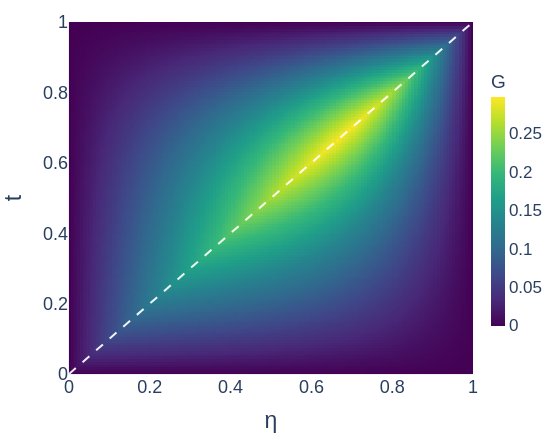
Learned kernel
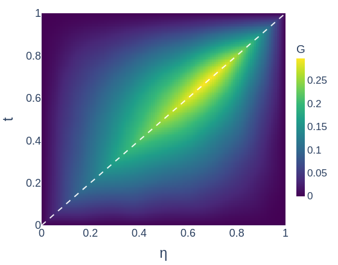
Signed error
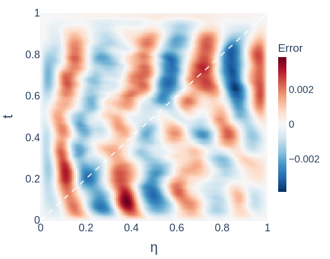
Fixed-η slice
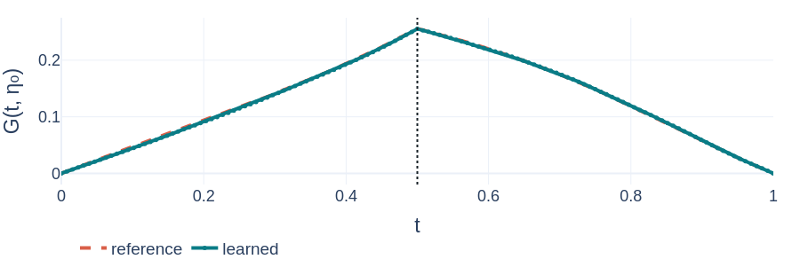
Diagnostics
The learned kernel captures the singular Green structure, and the signed error is not concentrated near the singular diagonal.
\Omega=\{x^2+y^2<0.5^2\},\qquad -\nabla\cdot(a\nabla u)=f,\qquad a(x,y)=1+\frac12\sin(2\pi x)\sin(4\pi y),\qquad \mathbf b=0,\ c=0.
min
rel. sol. err.q25
rel. sol. err.q50
rel. sol. err.q75
rel. sol. err.max
rel. sol. err.Source
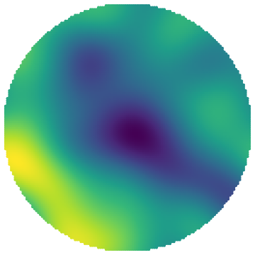
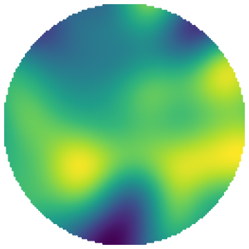
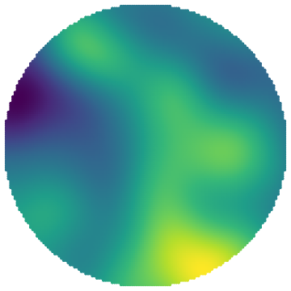
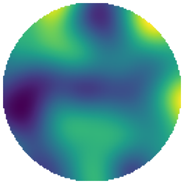
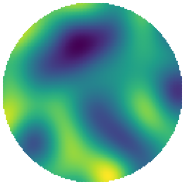
Reference
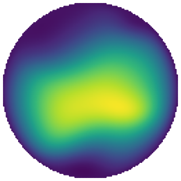
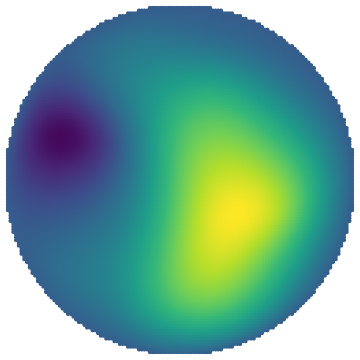
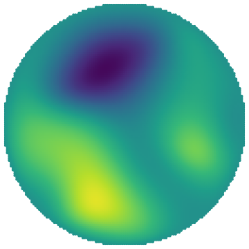
Prediction
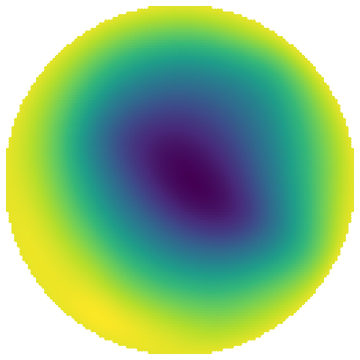
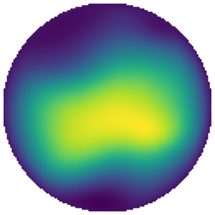
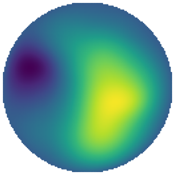
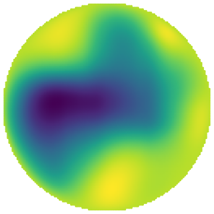
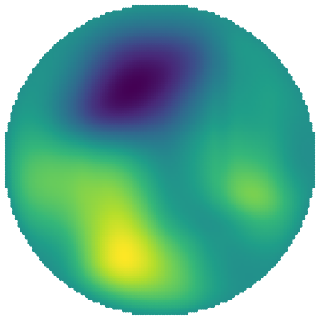
Signed error
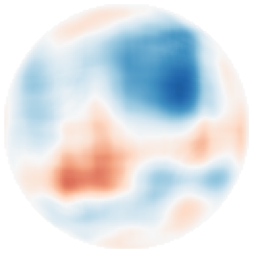
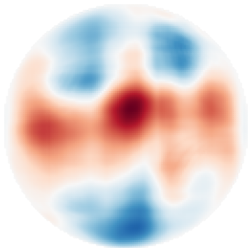
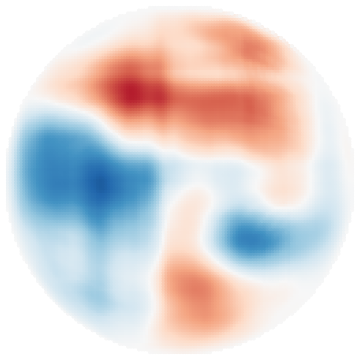
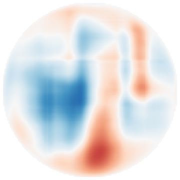
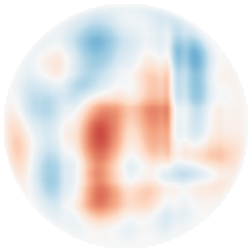
Selected by relative solution error
Source uses per-sample scales. Within each sample, reference and prediction share one solution scale; signed error uses a zero-centered shared scale.
Quantile-selected samples show that the learned directional source split supports 2D solution reconstruction across the observed relative-error range, not only on a single favorable case.
A 2D elliptic problem is solved through axial Green inversions and a learned, balance-preserving source decomposition.
Axial Green kernels
Normalize axial intervals and learn line-wise inverse kernels.
Analytic structure
Encode singular Green behavior before neural correction.
Source split
Predict φ/ψ so line-wise inverses form a 2D solution.
Energy bound
Tie split consistency to final solution error under assumptions.
Axial Green operators provide the line-wise inverses,
and CouplingNet supplies the missing source coupling.
Ready without figures
Deferred until figures are selected
G_\theta = E M R_\theta + B\left(J_0-\frac12E\right) + A G_0.
Dirac delta structure
\partial_t^2G_0(t,\eta)=-\delta(t-\eta)
Heaviside cancellation
\partial_tJ_0(t,\eta)=G_0(t,\eta)
S=J_0-\frac12E,\qquad \partial_t^2S=\partial_tG_0
Smooth residual
The neural term learns what remains after analytic singular and cancellation structure is built in.
G_x[\phi_*]=u_*+\varepsilon_x, \qquad G_y[\psi_*]=u_*+\varepsilon_y.
\|u_{\mathrm{pred}}-u_*\|_a \le \frac{C_E}{2} \left( \sqrt{\mathcal{E}_{\mathrm{split}}} + \|\varepsilon_x-\varepsilon_y\|_a \right) + \frac12\|\varepsilon_x+\varepsilon_y\|_a.
\varepsilon_x-\varepsilon_y perturbs split consistency.
\varepsilon_x+\varepsilon_y is common Green bias and can remain invisible to split consistency.
Connected physical interval
I=[s_0,s_1], \qquad s=s_0+Lt, \qquad t\in[0,1].
a_{\mathrm{unit}}=a_{\mathrm{phys}}, \quad a'_{\mathrm{unit}}=L a'_{\mathrm{phys}}, \quad b_{\parallel,\mathrm{unit}}=L b_{\parallel,\mathrm{phys}}, \quad c_{\mathrm{unit}}=L^2c_{\mathrm{phys}}, \quad f_{\mathrm{unit}}=L^2f_{\mathrm{phys}}.
Each connected interval is an independent one-dimensional Dirichlet Green problem.
Disconnected intervals are not merged, because that would create artificial information flow outside the domain.